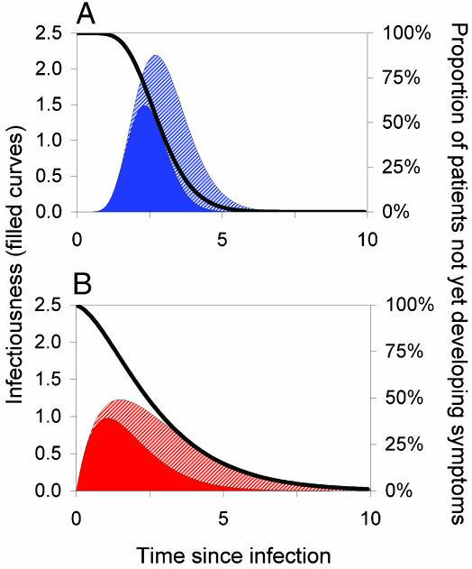
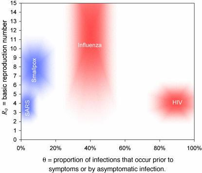
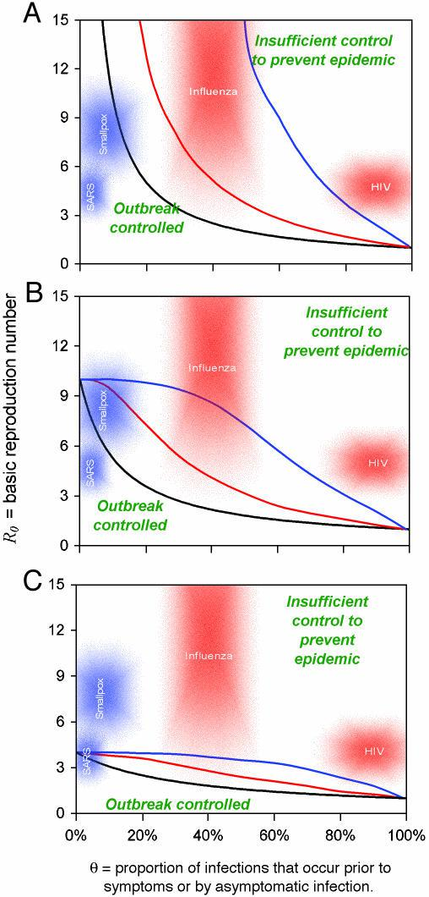

SARI数据分析(2): 使传染病疫情可以控制的因素
使传染病疫情可以控制的因素
Factors that make an infectious disease outbreak controllable
上一篇看得头疼先扔到一边. 快速浏览了一下这篇, 似乎模型相对简单一些, 可能读完了对理解上一篇的复杂模型也有帮助. 这一篇发表于2004年的PNAS, 有600次的引用量.
传染病爆发的模拟¶
我们建立了一个传染病爆发动态的数学模型，它可以捕捉到相关病原体的症状和传染性的时间分布，并提供了一种替代早期理论研究的方法。 该模型可用于评估简单的公共卫生控制措施的影响。 通过探讨不同的分布和不同的干预策略，我们旨在建立一个通用的定量框架，以帮助预测如果在疫情爆发的早期阶段有效地应用简单的控制措施是否能够成功地扭转疫情增长
我们将个体的传染性描述为感染后时间 (τ) 的函数，β(τ)，以及尚未出现症状的概率，S(τ)；
示例分布如图 1 所示。
请注意，在我们举例说明的例子中，所有患者最终均出现症状，因为随着感染后时间 τ 变大，S(τ)趋于零。更普遍地说，如果 S(τ)趋于固定值 $S_∞ > 0 $，则感染的比例 $S_∞$ 完全无症状。

关键流行病学决定因素。这些决定因素将个体患者的典型疾病进展模式.
- 描述为从感染后时间的函数（以任意单位测量）。
- 实线表示随时间推移的传染性（左轴）。黑色曲线表示S(τ)，即人在一定时间（右轴）内未出现症状的概率。
- 基本再生数 R0 为传染性曲线下面积（实心颜色加斜线部分）。
- 实心区域代表症状之前出现的传播，因此 θ定义为症状前传播的比例，是实色的传染性曲线下面积与总面积的比例。
- （A 和 B）显示潜伏期和传染性的不同分布。两种情况下均具有 R0 = 5、Tg = 3（以任意时间单位）和 θ = 0.5；A 显示低方差 $0.1 \times mean^2$ ,B 显示高方差$0.5 \times mean^2$
从图1所示的个体感染过程的描述中，我们确定了三个重要参数:
- 基本再生数(basic reproduction number)，R0，定义为易感人群中由初次感染引起的二次感染的数量，从而测量病原体的内在传播能力; 它可以计算为传染性曲线下的面积(见图1和公式3). 一个流行病要在传播的早期阶段扩散，必须有不止一个次要病例由主要病例产生，因此我们需要 R0>1。
- 疾病发生时间(disease generation time) Tg, 是指个体感染者与感染者之间的平均时间间隔「我理解是一个人传染上疾病到他传染下一个人之间的时间」，它与 R0一起确定了疫情发展的时间尺度，从而确定了采取干预措施避免大规模疫情爆发的速度。 具体地说，在一个不断增长的暴发中，病例数的倍增时间为$ln (2) Tg/(R0 - 1)$「此处有歧义, 原文中ln(2)中的2为指向文献的超链接, 不确定是否是数字」
- 发生出现症状之前(或无症状)的传染比例θ ，这决定了基于症状的公共卫生控制措施减少感染数量的潜力。
我们的分析基于一个理想化的最优干预，在实施隔离和隔离方面没有延迟，因此 Tg 在我们的分析中没有发挥重要作用。 然而，该框架可以解释在临床症状出现和住院隔离(换句话说，延迟实施)之间的分布式延迟，在定义范围内。 延误的影响总是在增加。 例如，在非典型肺炎疫情中，在香港等地，症状出现和隔离之间有明显的延迟。 由于公共卫生公告鼓励及早向卫生保健机构报告，这些延误缩短了疫情过程中的时间。 显然，症状的定义也取决于临床对症状的定义: 例如，对于天花，根据是否使用前驱热或明显皮疹来确定隔离措施，将获得不同的值。 这些不确定因素需要纳入。「唉, 这太理想化了, 发达国家啊, 但先从这个模型开始吧」
参数θ的选择有一个关键的优点，即在疾病开始爆发时，可以很容易地用接触追踪法来估计，因为参数是指出现无症状或症状前感染者的感染比例。「唉,too simple」
一旦实施公共卫生干预措施，患者在出现症状后立即按照有效性$ε_I$被隔离，隔离前感染的一部分人进行接触追踪并按有效性$ε_T$被隔离。 这两个参数$ε_I$和$ε_T$共同决定了执行公共卫生措施的效力。「不确定这次SARI对接触者的跟踪做得如何, 感觉武汉早期这两个参数很低吧」
通过对这一模型的数学公式进行分析和模拟(下一节将详细讨论) ，我们发现，对于参数 R0和θ低于某一临界线的组合值，干预措施足以控制感染的爆发。 我们在这里考虑的四种感染的参数的估计范围如图2中的阴影区域所示。 R0和θ临界值将取决于干预效果以及其他参数, 对于一些选定的情况如图3所示。 关于病人间隔时间对症状的可变性和传染性函数的变异性的其他假设也作了适当的假设，并按颜色编码成三个数字。

参数估计值。4 种公众关注的病毒感染的关键参数 R0 和 θ（来源见正文）的合理范围显示为阴影区域。阴影区域的大小反映了参数估计值的不确定性。对这些区域进行颜色编码，以匹配图 1 中适用于每种疾病的 β (τ) 和 S (τ) 的假定方差值.

暴发控制的标准。每条曲线代表不同的情况，包括干预和参数选择的组合。对于每种情况，如果给定的感染因子低于 R0–θ 曲线，则疫情最终始终得到控制。在曲线上方，需要额外的控制措施（例如，流动限制）来控制扩散。黑线仅对应于隔离的有症状个体。彩色线对应于对已经隔离的有症状个体的所有接触者增加立即追踪和检疫(隔离)。
黑色（仅隔离）线与分布假设（低或高方差）无关，而彩色（隔离 + 接触追踪）线与图 1 中的方差假设匹配（红色 = 高方差；蓝色 = 低方差）。隔离有症状个体的有效性在 A 中为 100%，在 B 中为 90%，在 C 中为 75%。在实施接触者追踪和隔离的情境中始终假定 100% 有效（彩色线）。使用包含隔离和接触追踪的暴发传播数学模型计算曲线（见正文）。
未完成草稿, 持续更新中